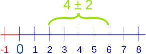
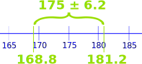
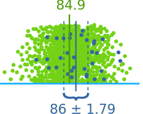
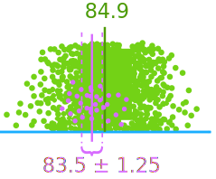
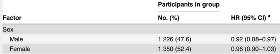
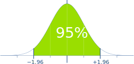
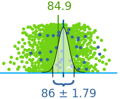

Confidence Intervals

An interval of 4 plus or minus 2
A Confidence Interval is a range of values we are fairly sure our true value lies in.
Example: Average Height
We measure the heights of 40 randomly chosen men, and get a mean height of 175cm,
We also know the standard deviation of men's heights is 20cm.
The 95% Confidence Interval (we show how to calculate it later) is:

The "±" means "plus or minus", so 175cm ± 6.2cm means
- 175cm − 6.2cm = 168.8cm to
- 175cm + 6.2cm = 181.2cm
And our result says the true mean of ALL men (if we could measure all their heights) is likely to be between 168.8cm and 181.2cm
But it might not be!
The "95%" says that 95% of experiments like we just did will include the true mean, but 5% won't.
So there is a 1-in-20 chance (5%) that our Confidence Interval does NOT include the true mean.
Calculating the Confidence Interval
Step 1: start with
- the number of observations n
- the mean X
- and the standard deviation s
Note: we should use the standard deviation of the entire population, but in many cases we won't know it.
We can use the standard deviation for the sample if we have enough observations (at least n=30, hopefully more).
Using our example:
- number of observations n = 40
- mean X = 175
- standard deviation s = 20
Step 2: decide what Confidence Interval we want: 95% or 99% are common choices. Then find the "Z" value for that Confidence Interval here:
| Confidence Interval |
Z |
| 80% | 1.282 |
| 85% | 1.440 |
| 90% | 1.645 |
| 95% | 1.960 |
| 99% | 2.576 |
| 99.5% | 2.807 |
| 99.9% | 3.291 |
For 95% the Z value is 1.960
Step 3: use that Z value in this formula for the Confidence Interval
X ± Zs√n
Where:
- X is the mean
- Z is the chosen Z-value from the table above
- s is the standard deviation
- n is the number of observations
And we have:
175 ± 1.960 × 20√40
Which is:
175cm ± 6.20cm
In other words: from 168.8cm to 181.2cm
The value after the ± is called the margin of error
The margin of error in our example is 6.20cm
Calculator
We have a Confidence Interval Calculator to make life easier for you.
Simulator
We also have a very interesting Normal Distribution Simulator. where we can start with some theoretical "true" mean and standard deviation, and then take random samples.
It helps us to understand how random samples can sometimes be very good or bad at representing the underlying true values.
Another Example
Example: Apple Orchard
Are the apples big enough?
There are hundreds of apples on the trees, so you randomly choose just 46 apples and get:
- a Mean of 86
- a Standard Deviation of 6.2
So let's calculate:
X ± Zs√n
We know:
- X is the mean = 86
- Z is the Z-value = 1.960 (from the table above for 95%)
- s is the standard deviation = 6.2
- n is the number of observations = 46
86 ± 1.960 × 6.2√46 = 86 ± 1.79
So the true mean (of all the hundreds of apples) is likely to be between 84.21 and 87.79
True Mean
Now imagine we get to pick ALL the apples straight away, and get them ALL measured by the packing machine (this is a luxury not normally found in statistics!)
And the true mean turns out to be 84.9
Let's lay all the apples on the ground from smallest to largest:

Each apple is a green dot,
our observations are marked blue
Our result was not exact ... it is random after all ... but the true mean is inside our confidence interval of 86 ± 1.79 (in other words 84.21 to 87.79)
Now the true mean might not be inside the confidence interval, but in 95% of the cases it will be!
95% of all "95% Confidence Intervals" will include the true mean.
Maybe we had this sample, with a mean of 83.5:

Each apple is a green dot,
our observations are marked purple
That does not include the true mean. That can happen about 5% of the time for a 95% confidence interval.
So how do we know if our sample is one of the "lucky" 95% or the unlucky 5%? Unless we get to measure the whole population like above we simply don't know.
This is the risk in sampling, we might have a "bad" sample.
Example in Research
Here is Confidence Interval used in actual research on extra exercise for older people:

What is it saying? Looking at the "Male" line we see:
- 1,226 Men (47.6% of all people)
- had a "HR" (see below) with a mean of 0.92,
- and a 95% Confidence Interval (95% CI) of 0.88 to 0.97 (which is also 0.92±0.05)
"HR" is a measure of health benefit (lower is better), so it says that the true benefit of exercise for the wider population of men has a 95% chance of being between 0.88 and 0.97
* Note for the curious: "HR" is used a lot in health research and means "Hazard Ratio" where lower is better. So an HR of 0.92 means the subjects were better off, and a 1.03 means slightly worse off.
Standard Normal Distribution
It is all based on the idea of the Standard Normal Distribution, where the Z value is the "Z-score"
For example the Z for 95% is 1.960, and here we see the range from -1.96 to +1.96 includes 95% of all values:

From -1.96 to +1.96 standard deviations is 95%
Applying that to our sample looks like this:

Also from -1.96 to +1.96 standard deviations, so includes 95%
Conclusion
The Confidence Interval is based on Mean and Standard Deviation. Its formula is:
X ± Zs√n
Where:
- X is the mean
- Z is the Z-value from the table below
- s is the standard deviation
- n is the number of observations
| Confidence Interval |
Z |
| 80% | 1.282 |
| 85% | 1.440 |
| 90% | 1.645 |
| 95% | 1.960 |
| 99% | 2.576 |
| 99.5% | 2.807 |
| 99.9% | 3.291 |